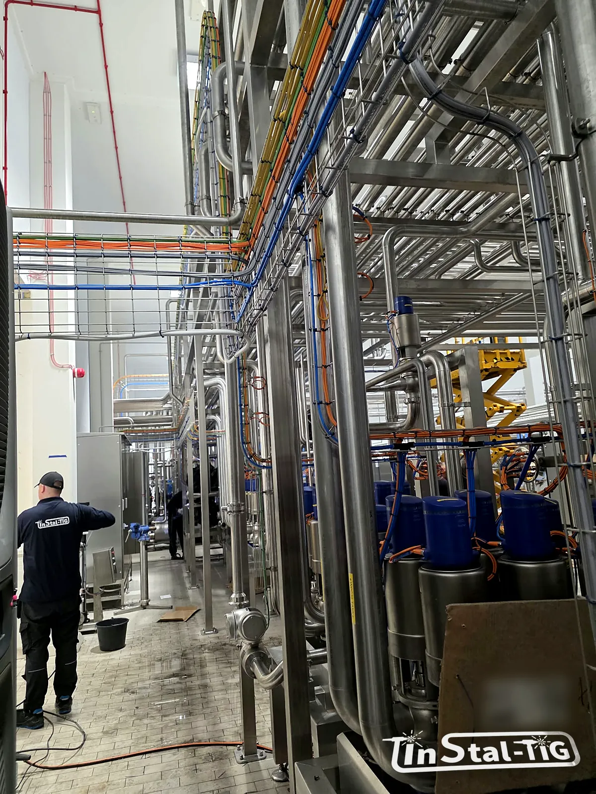

Serwis i modernizacja starych instalacji: przeróbka bez długiego postoju

Nowa instalacja na pustej hali to jedno. Przeróbka w działającym zakładzie to zupełnie inna praca: linia ma stać jak najkrócej, wokół trwa produkcja, a stare rury rzadko wyglądają tak, jak na rysunku sprzed lat. Opisujemy, jak przygotować modernizację, żeby postój był krótki, a nowa część instalacji nie odstawała od reszty.
Typowe powody modernizacji
- wymiana skorodowanych lub nieszczelnych odcinków,
- usunięcie martwych stref i odcinków bez spadku, które trudno umyć,
- nowe odgałęzienia, zbiorniki lub maszyny podłączane do istniejącej instalacji,
- wymiana armatury albo zmiana połączeń na łatwiejsze w serwisie,
- zmiana gatunku stali na odporniejszy, np. z 304 na 316L przy intensywnym myciu.
Krok 1: inwentaryzacja, zanim cokolwiek się wytnie
Dokumentacja starej instalacji często nie zgadza się ze stanem faktycznym. Zanim zaplanuje się przeróbkę, warto sprawdzić na miejscu:
- wymiary rur: średnicę zewnętrzną i ściankę, zmierzone suwmiarką, bo „DN 50” może oznaczać różne rury (zobacz DIN 11850 czy ISO 1127?),
- gatunek stali: jeśli nie ma dokumentów, można go potwierdzić przenośnym analizatorem składu,
- rodzaj połączeń i armatury, żeby nowe elementy pasowały do starych (o połączeniach piszemy w artykule o zaworach i armaturze),
- stan rur w miejscach łączenia: grubość ścianki, korozja, osady,
- trasę i podpory, w tym miejsca, gdzie rura może się wydłużać.
Krok 2: jak najwięcej pracy przed postojem
Najskuteczniejszy sposób na krótki postój to przenieść jak najwięcej pracy poza okno wyłączenia linii:
- prefabrykacja w warsztacie: odcinki rur, kolana i trójniki spawa się wcześniej, w dobrych warunkach, z formowaniem grani i kontrolą spoin,
- na miejscu zostają spoiny zamykające, czyli tylko połączenia nowych odcinków ze starą instalacją,
- konstrukcje wsporcze i podpory można często zamontować jeszcze przed postojem, gdy nie kolidują z pracą linii,
- materiał i armatura muszą być na miejscu przed wyłączeniem; brak jednej uszczelki potrafi wydłużyć postój o dzień.
Duże przeróbki warto dzielić na etapy dopasowane do planowanych przestojów, np. weekendów albo przerw technologicznych.
Krok 3: bezpieczeństwo w działającym zakładzie
- odcięcie i oznakowanie: instalacja musi być odcięta, opróżniona, wymyta i zabezpieczona przed przypadkowym uruchomieniem,
- pozwolenia: spawanie i szlifowanie to zwykle prace wymagające pozwolenia zakładu (np. na prace pożarowe),
- ochrona produkcji: iskry i pył ze szlifowania nie mogą trafiać na produkt ani na pracujące maszyny; strefę prac trzeba osłonić,
- ochrona stali nierdzewnej: pył ze stali czarnej i wspólne narzędzia mogą zostawić na nierdzewce obce żelazo, które potem rdzewieje (zobacz skąd się bierze rdza na nierdzewce).
Warto wiedzieć: spoina zamykająca w istniejącej instalacji też wymaga osłony gazowej od środka rury. W starej instalacji trudniej ją zapewnić, bo rura jest długa i ma odgałęzienia, dlatego stosuje się m.in. zaślepki do formowania grani. Bez tego spoina od środka będzie przebarwiona i mniej odporna na korozję (więcej w artykule o formowaniu grani).
Krok 4: po przeróbce, przed uruchomieniem
- trawienie i pasywacja spoin, jeśli są wymagane (kiedy są konieczne),
- próba szczelności lub ciśnieniowa nowego odcinka (co powinno znaleźć się w protokole),
- mycie i dezynfekcja przed pierwszym kontaktem z produktem,
- sprawdzenie, czy przeróbka nie zostawiła martwych stref ani odcinków bez spadku (zasada 3D),
- uzupełnienie dokumentacji powykonawczej, żeby następna przeróbka zaczęła się od aktualnych rysunków.
Co przygotować przed zamówieniem modernizacji?
- opis tego, co ma się zmienić, i powód (korozja, rozbudowa, problemy z myciem),
- zdjęcia i dostępne rysunki instalacji,
- możliwe okna postoju i czas, na jaki można wyłączyć linię,
- wymagania BHP i procedury zakładu dla firm zewnętrznych.
Na naszej stronie piszemy, że bierzemy całość: od pomiaru i rysunku, przez prefabrykację w warsztacie, po montaż i serwis. Opis planowanej przeróbki możesz przesłać przez formularz Wycena online.
Planujesz przeróbkę instalacji w działającym zakładzie?
Zadzwoń albo napisz. Opisz, co chcesz zmienić i ile może trwać postój, a zaplanujemy prace i przygotujemy wycenę.
Zadzwoń: 667 466 431 Napisz e-mail Wycena online